Rapunzel é a protagonista de Enrolados, sendo uma jovem cujo cabelo gigantesco tem poderes mágicos. Ela é mantida isolada do mundo em uma torre, criada por uma velha vaidosa chamada Gothel, que usa as habilidades dos cabelos da garota para permanecer sempre jovem. Entretanto, mal sabe ela que é a princesa desaparecida de um reino não muito distante, para o qual parte com o estranho Flinn, buscando se aventurar pelo mundo que nunca conheceu.
Flinn Rider
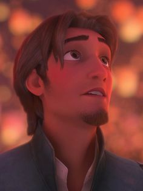
José Bezerra, mais conhecido como Flynn Rider, é o deuteragonista do filme Enrolados que lidera uma dupla de ladrões. Após um roubo, ele consegue enganar os ladrões e ficar com o objeto, a coroa da princesa perdida, só para si. Durante a fuga, ele acaba encontrando uma torre que decide escalar para se esconder dos guardas. Assim, ele acaba se envolvendo com Rapunzel e partindo juntos em uma aventura.
Tiana
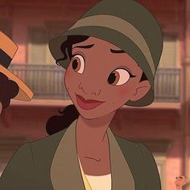
Tiana é a protagonista do filme A Princesa e o Sapo e retrata a primeira representação negra da franquia. Na história, Tiana mora em Nova Orleans e tem o sonho de abrir um restaurante, mas no dia que compartilha um beijo com um príncipe que havia sido transformado em sapo, Tiana acaba sendo vítima da mesma maldição. Ela tem um senso de honra muito grande e acredita que vai conseguir tudo o que deseja a partir de seus próprios méritos.
Naveen
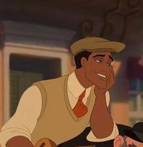
Príncipe Naveen é o príncipe da Maldonia que vem para Nova Orleães para a cena do jazz. É acompanhado por seu criado Lawrence. Por ser novo na cidade, ele é persuadido pelo homem da sombra, Dr. Facilier em fazer um passeio de seu escritório, o que resulta em uma maldição transformando-o em um sapo, juntamente com Tiana. Na busca de voltarem a sua antiga forma, ambos se apaixonam e acabam se casando ainda como sapos.
Merida
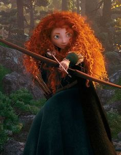
Merida é a protagonista de Valente, obrigada a seguir os costumes do seu reino, como o de se casar com um cavalheiro rico e importante. No entanto, o que ela deseja é ser livre para trilhar seu caminho sozinha, o que acaba gerando um abalo na sua relação com a mãe, a Rainha Elinor, ao transformá-la em Urso em sua busca desesperada por um pouco de liberdade.
Mulan
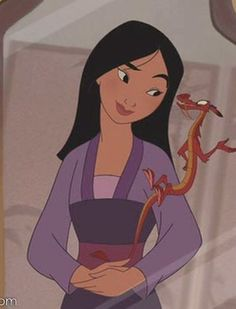
Fa Mulan é inspirada em uma figura lendária chinesa, aonde ela desrespeita a tradição que diz que apenas homens devem ir à guerra quando seu pai, idoso e doente, é convocado. Disfarçada de homem, a jovem se alista no exército e parte em direção à batalha para defender a China do temível Shan Yu.
Bela
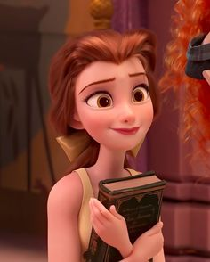
Bela é a protagonista de A Bela e a Fera. Ela é uma jovem muito inteligente e leitora voraz, que deseja se aventurar para longe de sua pequena aldeia. Quando seu pai é aprisionado em um castelo encantado, Bela se oferece em troca de sua liberdade, conhecendo então A Fera, e logo se apaixonando por ele.
Fera
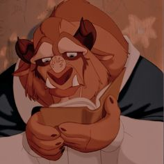
A Fera é o protagonista masculino de A Bela e a Fera, aonde foi um belo e arrogante príncipe transformado em uma besta horripilante como punição por sua frieza. Para quebrá-la, ele deveria ser amado por uma jovem antes que a última pétala da rosa encantada caia, em seu 21º aniversário, mas não acreditando nisso, passa a viver amargurado. Ele então aprisiona Bela em seu castelo, após o pai dela ter-lhe roubado uma flor. Com o passar da história, ambos se apaixonam e buscam libertá-lo de sua maldição. Tudo isto deve ser feito
Jasmine
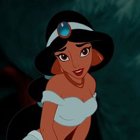
Jasmine é uma personagem de Aladdin, filha do Sultão. Ela é astuta e não abaixa a cabeça para as ideias que discorda, o que inclui o casamento arranjado. Na trama, ela se apaixona por Aladdin, um garoto esperto que habita as ruas próximas ao palácio do Sultão e que encontrou uma lâmpada mágica que realiza desejos.
Alladin
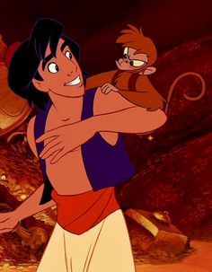
Aladdin é um jovem ladrão que vive de pequenos roubos em Agrabah. Um dia, ele ajuda uma jovem a recuperar um valioso bracelete, sem saber que ela na verdade é a princesa Jasmine. Ele logo fica interessado nela, que diz ser a criada da princesa, mas ao visitá-la no palácio e descobrir sua identidade, ele é capturado por Jafar, o grão-vizir do sultanato, que deseja que ele recupere uma lâmpada mágica, onde habita um gênio capaz de conceder três desejos ao seu dono.
Pocahontas
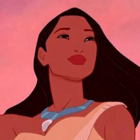
Pocahontas é a única filha do chefe do povo Powhatan. Aventureira e de espírito livre, ela sente que se casar com o homem que seu pai deseja não é o caminho correto a se seguir. Ela cria um vínculo forte com John Smith, um homem inglês pertencente a um grupo de colonizadores que desembarcam em terras americanas, e o ensina sobre sua cultura e sobre a natureza.
Moana
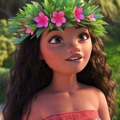
Moana é uma princesa da Disney que parte em uma jornada para salvar seu povo de uma praga e conhece o semideus Maui, que a guia em uma aventura pelos oceanos.
Elsa
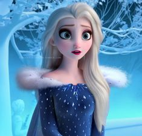
Elsa de Arendelle é uma personagem neutra mas de coração frio no conto de fadas original e vilã em inúmeras adaptações da personagem. No filme atual, ela possui poderes de gelo, e pela morte de seu pais, se torna reclusa com medo de machucar todos a sua volta. Em seu o primeiro evento social, acaba perdendo o controle de seus poderes, e foge em busca de se reencontrar, com sua irmã Anna procurando-a em seu encalço.
Anna
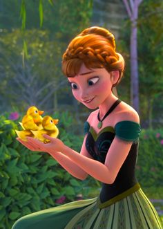
Anna de Arendelle é a irmã destemida, corajosa, e inocentemente estranha da poderosa rainha da neve Elsa, e embarca em uma perigosa jornada para salvar seu reino de um inverno eterno e recuperar sua irmã.
Olaf
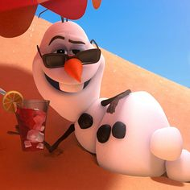
Olaf é um boneco de neve, criado por Elsa, que vive nas montanhas de Arendelle. Ajuda Anna na busca por sua irmã e se prova um bom e fiel amigo.